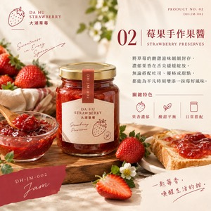
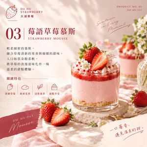
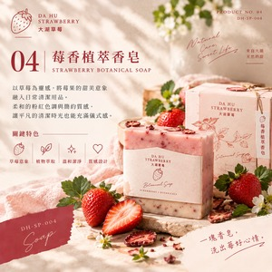

在地風土
從大湖草莓的產地印象出發
A LITTLE PLACE, A LOT OF SWEETNESS
從大湖草莓的產地印象出發
把莓果風味變成生活小禮
讓每一次到訪都有值得收藏的故事
A TASTE OF DA HU
四款草莓靈感選物，
收藏大湖的香甜與心意。
 NO. 01FRESH PICK
NO. 01FRESH PICK嚴選鮮紅飽滿的草莓，將自然香甜與產地心意一同裝盒。

NO. 02SWEET MOMENT封存草莓的酸甜果香，為吐司、優格與日常甜點添一抹莓好。

NO. 03SOFT & DELICATE輕柔綿密的口感，融合草莓清新果香，品嚐一段溫柔甜點時光。

NO. 04BOTANICAL CARE以草莓為靈感，揉合柔和粉色與簡約質感，為日常清潔增添儀式感。
SLOW DOWN, PICK SOME SWEETNESS
走進草莓園，感受季節與土地的氣息；逛逛在地店家，把新鮮草莓與特色伴手禮一起帶回家。
草莓採果體驗出發前先確認果園開放與採果狀況
↗大湖在地探索把周邊景點與特色店家排進行程
↗莓好伴手禮挑選適合自己與親友的草莓小禮
↗以草莓為起點，分享大湖的產地魅力、生活選物與旅行靈感。
苗栗縣大湖鄉
實際營業地址請依正式店家資訊更新依各草莓園公告為準
建議出發前先確認開放時間、果況與預約方式歡迎洽詢商品與旅遊合作
請於網站正式上線前填入官方電話、信箱或社群連結網站資訊提示：此網站為品牌展示與電商概念設計，店家地址、聯絡方式、商品售價、配送與付款資訊尚待確認，請在正式營運前補齊。